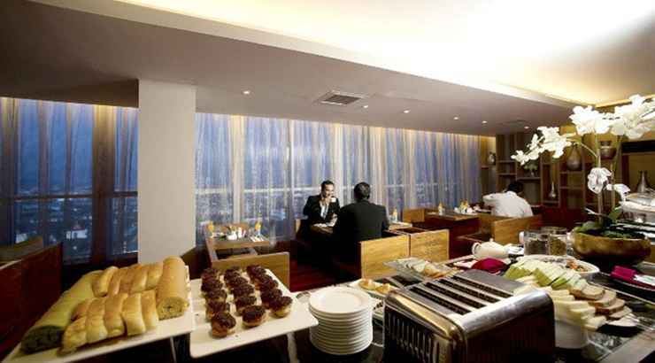
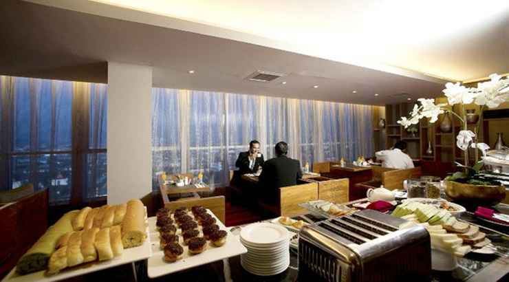

The Priemer Hotel
Menetapkan standar baru untuk industri perhotelan di Pekanbaru, kami menawarkan lokasi baru bagi tamu kami untuk mengalami janji merek Grand Zuri bahwa "kami tahu bagaimana cara menyenangkan Anda". Total kamar terdiri dari 168 kamar dan suite,
LAYANAN HOTEL
Layanan binatu & dry cleaning
Lantai bebas rokok
Akses internet nirkabel
Layanan kamar 24 jam
Operator 24 jam
Semua kartu kredit utama diterima
Layanan antar-jemput ke / dari bandara Sultan Syarif Kasim II
Staf hotel dua bahasa
Pusat bisnis
Toko Hadiah
Mushola tamu
11 ruang pertemuan / fungsi dengan 2 area pra fungsi yang luas
450 Banyak gedung parkir mobil
Karaoke dengan 10 kamar pribadi
FASILITAS KAMAR
Fasilitas membuat teh & kopi gratis
Akses internet nirkabel
Gratis 2 botol air minum
Koran nasional gratis
Penyejuk udara yang dikontrol secara individual
Bak mandi atau pancuran individu dengan air panas & dingin
Tirai hitam
Sistem kartu kunci elektronik
Telepon SLI menyatukan di kamar tidur dan kamar mandi
Mini bar
Brankas
Televisi LCD multi saluran satelit
Perlengkapan mandi lengkap dan fasilitasnya termasuk pengering rambut, sandal, dan jubah mandi *
Zuri Dream - tempat tidur berkualitas tinggi untuk tidur nyenyak - tidur oleh King Koil®
168 KAMAR & SUITES
Hotel ini memiliki 168 kamar & suite. Semua kamar berdesain modern, memadukan kesederhanaan dengan kenyamanan dan kemudahan luar biasa. Semua suite memiliki ruang tamu yang terpisah, meja kerja yang luas, kamar mandi besar dengan bathtub, dan dilengkapi dengan Wi-Fi, unit telepon baik di kamar dan kamar mandi dengan akses SLI, kabel TV layar datar 32 dan 42 inci, dan mini bar.
GAMBARAN
Spa dan pusat kebugaran oleh De Vata. Terletak di lantai 5 di dekat kolam hidro, adalah bar kolam renang yang menyajikan minuman sehat, mulai dari jus segar hingga teh herbal. Fasilitas ini juga mencakup kolam renang, sauna, dan kolam pusaran air dengan area relaksasi.
11 RUANG PERTEMUAN
Hotel ini menawarkan 1 pusat bisnis, 11 ruang pertemuan, dan sebuah ballroom, The Premiere Ballroom. menampung antara 20 hingga 2500 tamu untuk berbagai kesempatan.
THE CAFE
24 jam. Masuki restoran kafe kosmopolitan kami di lantai lobi dan nikmati suasananya yang berkembang. Di mana Anda dapat menikmati santapan santai sepanjang hari dalam lingkungan yang terang alami atau bersantap secara eksklusif dengan tamu Anda di malam hari. Menyajikan beragam hidangan, mulai dari hidangan lokal hingga internasional, semua disiapkan dan dipimpin oleh Kepala Chef kami; pemenang 5 kali dari kompetisi memasak televisi nasional dengan pengalaman luas dari seluruh dunia.
PREMIERE LOUNGE
Terletak di lantai 2, menghadap pemandangan Jalan Jenderal Sudirman yang indah, di sinilah Anda akan menemukan lounge kontemporer yang ditata elegan dengan gudang anggur dan ruang cerutu, yang dibuat untuk kerumunan orang Pekanbaru yang canggih. Nikmati suasana, isi ulang setelah hari yang sibuk, atau bahkan hanya bersantai dengan hiburan musik live kami. Lounge pribadi untuk mereka yang lebih menyukai suasana intim dengan sekelompok teman juga tersedia.
LOUNGE CLUB EKSEKUTIF
Siap secara eksklusif untuk mereka yang tinggal di lantai eksekutif kami adalah lounge klub pribadi ini, yang terletak di lantai 12. Sarapan, waktu minum teh, atau makanan ringan akan disajikan sepanjang hari untuk kesenangan dan kenyamanan tamu lantai eksekutif kami.


 
